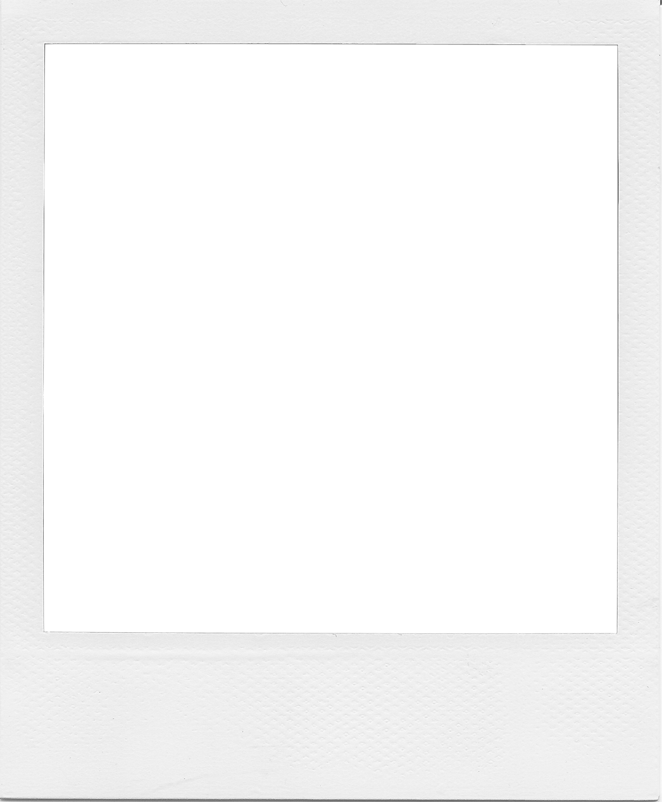
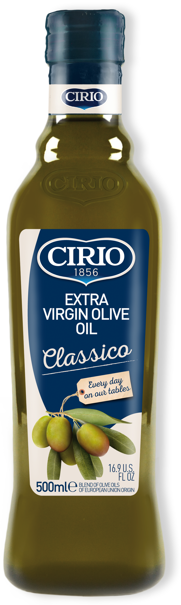

Kochamy pokazywać naszą pasję światu
Całe opakowanie oliwy Cirio oddaje wielką miłość do jedzenia i prawdziwą przyjemność z codziennego gotowania. Oprócz logo, na butelkach wytłaczamy widelec i łyżkę, które są zaproszeniem do wzbogacania smaku każdego dnia o nowe przepisy - proste, ale pełne uczuć.
Każdą butelkę

Wytłoczonym logotypie

szyjce